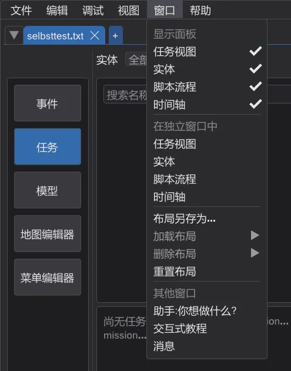
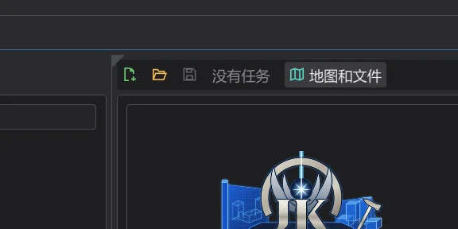
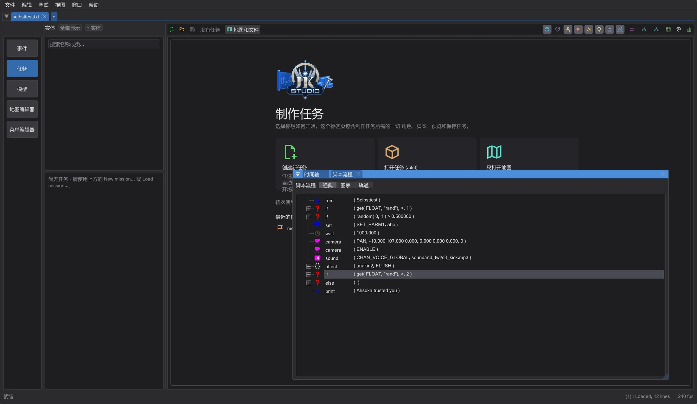
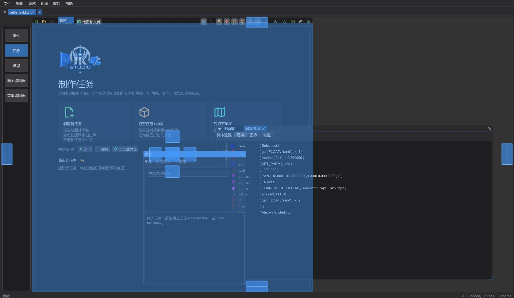

排列窗口和屏幕
将任意面板放到任意位置——在主窗口中放在另一个面板旁边、下方或作为其选项卡,或放入第二个屏幕上的独立窗口——并按区域以名称保存布局。
每个区域——事件、任务、模型、地图编辑器 和 菜单编辑器——都由停靠在主窗口中的面板组成。只要不移动任何东西,每个面板都留在原位置:即与以前逐像素相同、分隔线也相同的标准布局。
移出面板#

- 1
打开 窗口 菜单(在地图编辑器中它是最后一个菜单,位于 NetRadiant 的菜单之后),在 在独立窗口中 下单击面板,例如时间轴。它会成为独立窗口;它在主窗口中的位置让给相邻面板——任务视图会变高。
- 2
或者将鼠标指向面板的左上角:会出现一个小三角形。把它拖开,面板就随之移出;单击它则会显示面板的选项卡。
- 3
拖动窗口的标题栏将其拖出主窗口:它会成为真正的 Windows 窗口,可以放到第二个屏幕上。它在那里继续绘制——包括 3D 视图和地图编辑器的实时光照。也可以像拖到主窗口一样把文件拖到这样的窗口上(例如把模型拖到地图编辑器的 XY 视图上,或把 .menu 文件拖到菜单编辑器的画布上)。

显示面板 可完全隐藏面板;它的空间同样让给相邻面板。其他窗口 部分可打开助手、教程和消息——它们本来就是独立窗口。
组合面板并停靠到任意位置#

将一个面板的窗口拖到另一个面板上——无论该面板位于独立窗口还是主窗口中:会出现标记。放在中间标记上,两者成为选项卡;放在箭头上,它就位于旁边、上方或下方。这样可以把 Script Flow 放到地图视图下方、让实体图层成为地图视图的选项卡、把地图编辑器的摄像机移到 XY 视图下方——就像在 Blender 中一样。之后可以拖动停靠面板之间的分隔线,选项卡也可以再拖出来。这适用于同一区域的面板;“查找”等对话框保持独立。

重新停靠面板#
- 用其窗口的 x 关闭——面板回到原位置,不会丢失任何内容。如果你重新排列了该区域,原位置已不存在,它会停靠在相邻面板旁边,你的布局保持不变。
- 或者再次单击 在独立窗口中 下的面板。
- 或者把它放到主窗口中想要位置的标记上。
- 重置布局 会将该区域的所有面板恢复为标准布局。
保存、加载和重置布局#
每个区域都有自己的布局。布局另存为 会记住每个面板的位置——停靠在主窗口中、位于独立窗口中或已隐藏——以及这些窗口的位置、所在屏幕和组合方式。加载布局 切换到已保存的布局,删除布局 删除布局,重置布局 将该区域的所有面板恢复为标准布局。每个区域的当前布局保存在设置中,下次启动时会恢复。
屏幕发生变化时#
- 拔下屏幕或改变屏幕排列时:原来位于其上的窗口会以原大小回到主窗口所在的屏幕。
- 屏幕比窗口小:窗口会缩小到刚好能放下。
- 窗口移到缩放比例不同的屏幕(100%、150%……)上:其大小和文字会跟随该屏幕的缩放比例。
地图编辑器#
NetRadiant 的布局仍是默认值(首选项 > 布局):Regular、Regular Left 和 Split(包括自由分配位置和内置实体窗口的情况)各自有标准布局,尺寸和分隔线都与 NetRadiant 完全相同——拖动、折叠和 Maximize view 的行为与 NetRadiant 一样。移出的视图会像在 NetRadiant 中隐藏视图那样把位置让给相邻视图;在独立窗口中它会绘制在主窗口中显示的全部内容,单击其中即可使其成为活动视图,快捷键和自由视角随后在该窗口中生效——在任何屏幕上都可以。一旦视图停靠到其他位置(例如作为摄像机的选项卡),就使用 ImGui 的分隔线;重置布局 可恢复 NetRadiant 的布局。在 Floating 中视图本来就是浮动的。
菜单编辑器#
菜单编辑器的两种布局都由面板组成:选项卡在右侧时为 单个元素、画布 和 层级、文本、属性 列;文本在下方时(首选项)为带层级的组件面板、画布、属性 和 文本编辑器——例如把画布放大到第二个屏幕上,而文本留在主窗口中。
故障排除#
- 面板丢失或布局混乱:窗口 > 重置布局 可恢复该区域的标准布局。
- 如果在主窗口内停靠在你的电脑上出现问题:用环境变量
BHED_DOCKSPACE=0启动 JK Studio(例如在命令提示符中输入set BHED_DOCKSPACE=0,然后在同一命令提示符中运行jkstudio.exe)。这样每个面板都会回到主窗口中的固定位置,只能像早期版本那样移到独立窗口中;把面板窗口放回原位置即可重新停靠。你的布局会保留。